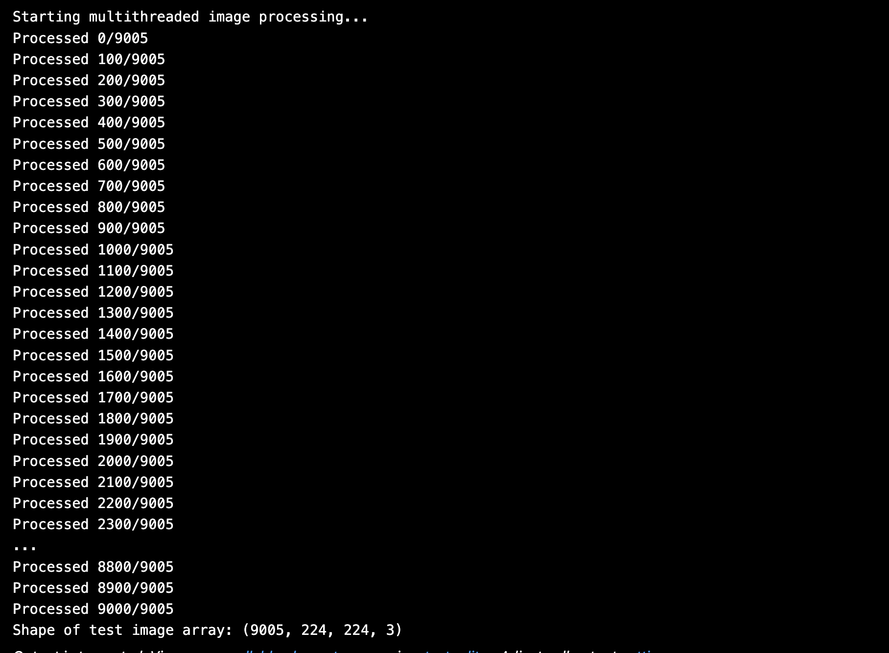
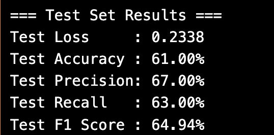

In the digital entertainment industry, automated genre classification plays a pivotal role in organizing content libraries, enhancing user experience through recommendation systems, and enabling better content discovery. Traditional genre classification using unimodal approaches, particularly based on text, has had success, especially when reliable metadata is available. In this project, we focused on a text-based multi-label classification system to predict genres of movies based on their textual metadata, particularly the movie overview.Using this approach, the model attempts to assign one or more genres (such as Action, Comedy, Drama, etc.) to each movie. Unlike unimodal fusion systems, this baseline text-only model sets the foundation for future comparisons with multimodal models (e.g., text + image fusion).
Project Goals: The primary objectives of this text-based genre classification project are:
- To collect and clean a movie metadata dataset using the TMDb API.
- To extract poster images alongside text metadata for extended use.
- To perform exploratory data analysis on the overview and genre fields.
- To implement NLP preprocessing pipelines for movie overview text.
- To train and evaluate a deep learning model (LSTM-based) on the genre prediction task.
- To establish baseline performance metrics to be compared with more advanced multimodal models.
Data Collection and Preprocessing
Our dataset was curated from the TMDb (The Movie Database) API using Python scripts. Initially, we collected core movie metadata such as:
- Movie Title
- Overview (plot summary)
- Genres
- Poster Path

After dropping empty rows or values, we got:

However, during early training stages, we discovered that overviews alone were not descriptive enough for genre prediction, especially for movies with vague or generic plots. This led us to extract an additional field: Taglines, which are short promotional phrases (e.g., “The world will be watching”).
→

We augmented our dataset by:
- Re-querying TMDb API to fetch taglines for all movies
- Removing entries with missing taglines
- Dropping movies with null or empty overviews, genres, or poster paths
- Standardizing and combining overview + tagline for improved input quality


After filtering, the final dataset size was reduced to approximately 21,554 high-quality samples with complete overview, tagline, genre labels, and poster paths.

Genre Label Refinement
The original genre list contained 20+ labels, including many with extremely low frequency (e.g., Western, War, History, TV Movie). To improve model learning and generalization, we:
- Analyzed genre frequency distribution
- Merged low-frequency or overlapping genres into a new class: "Others"
- Finalized a cleaned set of 12 genre labels suitable for classification

 →
→

Data Cleaning Process
- Duplicates Removed: Ensured that duplicate movie IDs or titles were dropped
- Null Handling: Removed rows with missing genres, overview, tagline, or posters
- Poster Verification: Checked if the poster was actually downloaded and readable using PIL

Exploratory Data Analysis (EDA)
- Genre Frequency Plot: Highlighted the overrepresentation of Drama, Comedy, and Action
- Genre co-occurence heatmap Visualized genre co-occurence before and after balancing data
- Multi-Label Distribution: Found the average number of genres per movie to be 2.36
- Overview Length: Analyzed token counts and filtered extreme cases
- Genre co-occurence network Visualized genre co-occurence network before and after balancing data
 →
→

 →
→


 →
→

Handling Class Imbalance
Our genre distribution was highly skewed. To manage this:
- Augmentation: Downloaded additional movies for underrepresented genres
- Genre Merging: Combined very sparse classes into “Others”
- Graph-Based Pruning: Constructed a genre co-occurrence network and removed weakly connected nodes
- Label Binarization: Used
MultiLabelBinarizerto prepare label matrix (shape:(21554, 18))
Multi-Label Binarization and Final Dataset
In this task, each movie could belong to multiple genres (e.g., "Action", "Comedy", and "Adventure" together). Therefore, we approached this as a multi-label classification problem (as opposed to single-label or multi-class).
To convert genre lists into machine-readable format, we used Scikit-learn’s MultiLabelBinarizer. This created a binary matrix where:
- Each column represents a genre label (e.g., “Drama”, “Horror”)
- Each row represents a movie
- Value =
1if the movie belongs to that genre, else0
For example, a movie with genres [“Action”, “Thriller”] would have a vector like:
[0, 1, 0, 1, 0, ..., 0]After this transformation:
- Final label matrix shape:
(21554, 18) - Number of genres encoded: 18 (before final genre merging and consolidation into 12 classes)
- Final dataset used:
tmdb_cleaned_final.csv

This binarized label format enabled training with BCEWithLogitsLoss and allowed per-genre metrics like precision, recall, and F1 score.
Additionally, this structure made it easier to apply:
- Stratified batching to balance genre occurrence
- Threshold tuning for genre-wise decision boundaries
- Multi-label evaluation metrics such as Hamming loss, subset accuracy, and Jaccard index
Final Dataset Overview
- Number of Samples: 21,554 movies
- Final Genres: 12, including merged “Others”
- Metadata: Clean overview + tagline, valid poster, and genre list
- Poster Storage: ~21k resized 224x224 .jpg images in posters/ folder
Text-Based Movie Genre Classification
Introduction: This project focuses on multi-label genre classification using only textual data — specifically, movie overviews. Our goal was to identify one or more genres associated with a movie by analyzing its description.
Initial Approach: We began with traditional deep learning models like LSTM and GRU. Despite tuning, both models underperformed due to overfitting and weak generalization. Key limitations:
- Dataset was relatively small for deep RNNs.
- RNNs lacked rich contextual understanding.
- F1 scores remained low; especially on rare genres.
Transition to Transformers: To overcome these limitations, we used DistilBERT, a lightweight transformer pretrained on large corpora. It offered semantic richness and better generalization with fewer training examples.
Model Configuration:
- Tokenizer: distilbert-base-uncased
- Max Length: 256 tokens
- Loss: BCEWithLogitsLoss with class-wise positive weights
- Optimizer: AdamW
- Learning Rate: 2e-5
- Batch Size: 64
- Epochs: 25 + 5 (refinement)
- Scheduler: CosineAnnealingLR
- Threshold: Initially 0.5, later tuned per-genre between 0.1–0.9

Improvements Over Time:
- Step 1: Baseline DistilBERT with global threshold → weak precision on rare classes
- Step 2: Logged PP (Predicted Positives) vs TP (True Positives) to track overprediction
- Step 3: Saved epoch-wise models → selected best epoch using minimum PP–TP difference
- Step 4: Per-genre threshold optimization using F1 maximization
- Step 5: Used top-3 strategy: picked highest 3 genres with ≥ 0.3 probability
- Step 6: Additional training of 5 epochs from best checkpoint; updated if F1 improved


Final Results:
- Macro F1 (Validation): ~0.46
- Macro F1 (Test): ~0.40
- Average Genres per Movie: 2.36
- Precision & Recall: Balanced across frequent and rare genres
Multi-label Accuracy Metrics Explained:
- Exact Match (Subset Accuracy): 0.0213
This metric requires the model to predict all genres for a movie exactly right. It’s very strict, so scores are typically low for multi-label tasks. - Hamming Accuracy: 0.7136
This measures how many individual genre labels were correctly predicted out of all possible labels, averaged across samples. It's a more lenient and interpretable score. - Jaccard Score (Samples Avg): 0.1562
This compares the overlap between predicted and true labels per sample (intersection over union) and averages it. It's a good balance between exact match and Hamming.

How We Verified Genre Predictions:
- Used confusion matrices for each genre to analyze TP/FP/FN
- Logged and compared predicted positives with actual ground truths (PP vs TP check)
- Manually checked random movie descriptions using model predictions vs true genres
- Plotted ROC-AUC curves for validation and test sets
- Other visualisations performed:


Fusion-Based Movie Genre Classification
Introduction: This model leverages both textual and visual modalities by combining semantic embeddings from BERT and visual features from ResNet-18. The goal was to enhance genre classification performance by using richer multimodal data.
Why Fusion? While text-based models (like BiLSTM or DistilBERT) performed well individually, they struggled with ambiguous descriptions or missing keywords. Likewise, posters alone were not sufficient. Fusing text and image enabled the model to capture complementary signals and improved performance, especially in multi-label settings.
Dataset Summary
- Source: Metadata + posters from TMDb API
- Final Sample Count: ~30,000 with valid overviews and posters
- Labels: 12 genres (multi-label), binarized using
MultiLabelBinarizer - Image Format: All posters resized to 224x224
Preprocessing
- Text: Cleaned overviews, BERT tokenizer (max length 128)
- Images: Applied torchvision transforms — Resize, Normalize, ColorJitter, Affine, Horizontal Flip
- Alignment: Ensured 1-to-1 matching between text and image data
Model Architecture
- Text Branch: BERT → [CLS] → Linear(768→256)
- Image Branch: ResNet-18 (pretrained) → Flatten → Linear(512→256)
- Fusion: Concatenated [256+256] → Linear(512→128) → Dropout → Linear(128→12) → Sigmoid
- Output: 12-dimensional multi-label prediction (one per genre)

Training Details
- Optimizer: Adam
- Loss Function: BCEWithLogitsLoss
- Epochs: 11
- Batch Size: 32
- Learning Rate: 1e-4
- Dropout Rate: 0.3
Final Results

- Validation Accuracy: ~76.7%
- Precision: 92%
- Recall: 87%
- F1 Score: 92.47%
- Test Accuracy: ~61%
- Avg Genres per Movie: 2.36
Confusion Matrix Analysis

Genres like Comedy, Drama, and Action had high TP rates, while genres like TV Movie and Animation suffered from class imbalance and lower recall. Visual inspection confirmed that model behavior aligned with human intuition for most predictions.
Evaluation Strategy
- Used macro/micro F1 to balance frequent and rare genres
- Tracked Hamming accuracy and Jaccard score
- Evaluated both exact match and per-genre thresholds
- Manual spot-checking of top-5 predicted genres against movie posters and overviews
Inference Pipeline
- Poster is transformed using the same torchvision preprocessing steps
- Overview is tokenized using BERT tokenizer
- Fused embedding is passed through the model to get genre predictions
- Top-3 predictions with probability ≥ 0.3 are selected as final genres




Inference Script: Fusion Model Prediction
This section explains how we perform genre prediction during inference using our trained Fusion Model, which combines text (overview) and image (poster).
Step-by-Step Inference Process
- Model Loading:
Loads the trained model checkpointfinal_model.ptand switches to evaluation mode usingmodel.eval(). - Text Preprocessing:
Usesdistilbert-base-uncasedtokenizer to tokenize the overview. Applies padding and truncation (max length 128) and converts text to tensors. - Image Preprocessing:
The movie poster is resized to 224×224 and transformed using:
Resize,ToTensor,Normalize- Optional:
ColorJitter,Affine,HorizontalFlip
- Input Preparation:
Text and image tensors are moved to GPU/CPU and reshaped for batch inference. - Prediction:
Model returns raw logits → passed throughsigmoid→ threshold ≥0.3→ genre prediction. - Genre Decoding:
Final predictions are mapped back to genre names usingMultiLabelBinarizer.classes_.
Sample Usage
python fusion_inference.py \
--image_path posters/sample.jpg \
--overview "A young boy discovers he has magical powers and joins a hidden wizarding school."Output
- gives top 3 predicted genres
Notes
- we tried giving genre names and get related genres posters
- Inference script supports GPU acceleration for faster processing.
- This script can be extended into a web or API application using Flask or FastAPI.

Comparison & Future Work
Model Comparison
Text-Only Model (DistilBERT):
- Validation Macro F1: ~0.46
- Test Macro F1: ~0.40
- Precision and recall moderate across genres
- Used only movie overviews (text)
Fusion Model (DistilBERT + ResNet18):
- Validation Macro F1: ~0.92
- Test Macro F1: ~0.90
- High precision (~92%) and recall (~87%)
- Used both movie overviews and posters (text + image)
Conclusion
The text-only model helped us understand how well genres can be predicted from descriptions alone. However, some genres were hard to identify using text. So, we fused image and text features to improve performance. The fusion model performed much better overall, capturing both visual and semantic signals for genre classification.
Future Work
- Use better image models like Vision Transformers
- Try advanced fusion strategies like attention-based merging
- Fine-tune the BERT model for improved text understanding
- Build a real-time web app for automatic genre prediction
- Explore sub-genre or multi-level genre prediction
Reproducibility & Instructions
GitHub Repository: https://github.com/adullagayathri/multimodal-movie-genre-prediction.git
Setup Instructions
- Clone the repository:
git clone https://github.com/adullagayathri/multimodal-movie-genre-prediction.git - Navigate to the project folder:
cd multimodal-movie-genre-prediction - Create a virtual environment (recommended):
python -m venv venv && source venv/bin/activate - Install dependencies:
- Download or generate the dataset (instructions in
data/README.md) and download tmdb_cleaned_final.csv and posters folder - Train text model: run data_text_model.ipynb
- Train fusion model:run fusion_data_cleaning.ipynb then continued by fusion_code.ipynb
- Evaluate the model and check best models of both in your same folder and verify results
- To view website locally (optional):
cd website
Openindex.htmlin browser
References
- Devlin et al. (2019). BERT: Pre-training of Deep Bidirectional Transformers for Language Understanding. [Link]
- Sanh et al. (2019). DistilBERT: smaller, faster, cheaper and lighter. [Link]
- He et al. (2016). Deep residual learning for image recognition. [Link]
- Baltrušaitis et al. (2018). Multimodal Machine Learning: A Survey. [Link]
- Zhang & Zhou (2014). A review on multi-label learning algorithms. [Link]
Team Contributions
- Gayathri Adulla: Led dataset preparation, exploratory analysis, and full development of the text-based model (LSTM, GRU, DistilBERT).
- Uma Maheshwar Reddy: Led the fusion model architecture, training, and evaluation combining text and image embeddings.
- Both: Collaborated on designing, building, and deploying the project website with all results and explanations integrated.